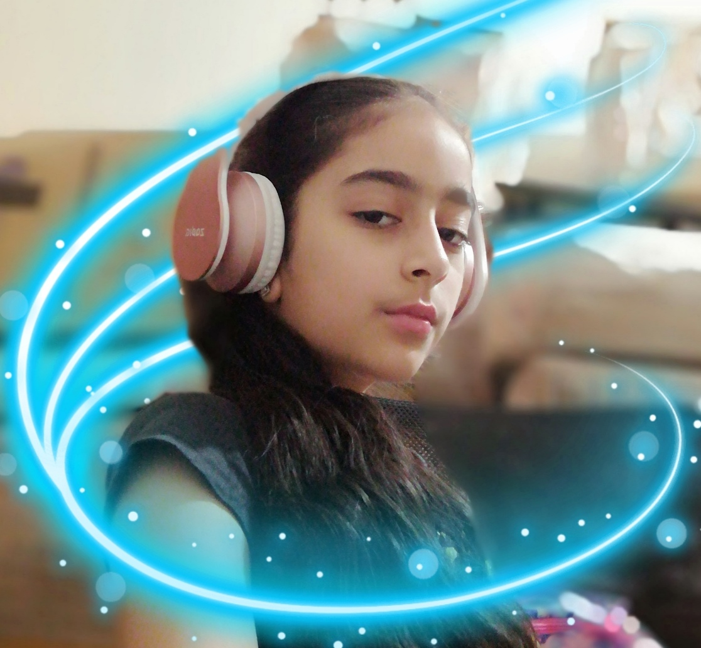

Places Must Visit

France
i had visited in April
France, officially the French Republic, is a transcontinental country spanning Western Europe and overseas regions and territories in the Americas and the Atlantic, Pacific and Indian Oceans.Its metropolitan area extends from the Rhine to the Atlantic Ocean and from the Mediterranean Sea to the English Channel and the North Sea; overseas territories include French Guiana in South America, Saint Pierre and Miquelon in the North Atlantic, the French West Indies, and many islands in Oceania and the Indian Ocean. Due to its several coastal territories, France has the largest exclusive economic zone in the world.
Germany
i had visited in june
Germany, officially the Federal Republic of Germany,is a country in Central Europe. It is the second most populous country in Europe after Russia, and the most populous member state of the European Union. Germany is situated between the Baltic and North seas to the north, and the Alps to the south; it covers an area of 357,022 square kilometres, with a population of over 83 million within its 16 constituent states. Germany borders Denmark to the north, Poland and the Czech Republic to the east, Austria and Switzerland to the south, and France, Luxembourg, Belgium, and the Netherlands to the west. The nation's capital and largest city is Berlin, and its financial centre is Frankfurt; the largest urban area is the Ruhr.
.jpeg)
England
i had visited in September
England is a country that is part of the United Kingdom.It shares land borders with Wales to its west and Scotland to its north. The Irish Sea lies northwest of England and the Celtic Sea to the southwest. England is separated from continental Europe by the North Sea to the east and the English Channel to the south. The country covers five-eighths of the island of Great Britain, which lies in the North Atlantic, and includes over 100 smaller islands, such as the Isles of Scilly and the Isle of Wight.
Review on the Movies
Amazing Series
The Inbestigators is an Australian mockumentary children's television series created by Robyn Butler and Wayne Hope. The show stars Abby Bergman, Anna Cooke, Aston Droomer and Jamil Smyth-Secka as Ava Andrikides, Maudie Miller, Ezra Banks and Kyle Klimson, fifth-graders who solve crimes in their school and neighbourhood respectively. The series has the comic tone of Little Lunch (another series on which they had worked) and an air of mystery. The show aired in two series from 21 June to 30 November 2019 on ABC Me. Netflix released the first and second series in mid-2019 and early 2020 respectively.
Amazing Series
Coop & Cami Ask the World is an American comedy television series created by Boyce Bugliari and Jamie McLaughlin that premiered on Disney Channel on October 12, 2018. It stars Dakota Lotus and Ruby Rose Turner as Coop and Cami Wrather, two middle school-aged siblings who crowdsource their decision-making online, with Olivia Sanabia, Albert Tsai, Paxton Booth, and Rebecca Metz also starring. The series ran for two seasons, airing its final episode on September 11, 2020.
List of Books

